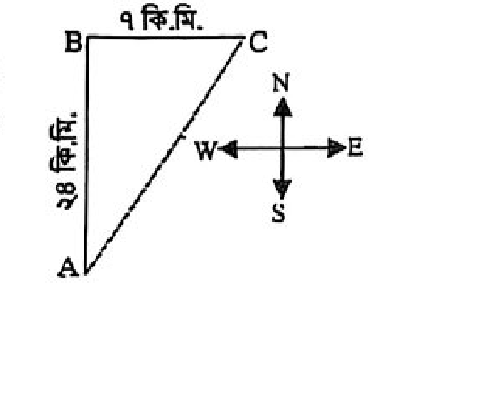

শিল্প মন্ত্রণালয় (বিসিআইসি)পরীক্ষা: ২৭.০৬.২০২৫৮০টি প্রশ্ন
বিসিআইসি: সহকারী প্রশাসনিক কর্মকর্তা ২০২৫ (BCIC Assistant Administrative Officer 2025)
বাংলাদেশ কেমিক্যাল ইন্ডাস্ট্রিজ কর্পোরেশন (BCIC) সহকারী প্রশাসনিক কর্মকর্তা নিয়োগ পরীক্ষা ২০২৫ এর প্রামাণ্য প্রশ্নব্যাংক, বিশ্লেষণ ও ইন্টারেক্টিভ রিভিশন নোট।
📊 বিসিআইসি প্রশ্নকাঠামো ও নম্বর বণ্টন ছক
বিষয় / বিভাগ
প্রশ্ন সংখ্যা
মান বণ্টন (প্রতি প্রশ্ন ১.২৫)
গুরুত্বপূর্ণ টপিকস
বাংলা ভাষা ও সাহিত্য
২০টি (১-২০)
২৫ নম্বর
ভাষার মৌলিক অংশ, স্বরভক্তি, সন্ধি, দ্বিরুক্তি, রূপক কর্মধারয়, তৎপুরুষ সমাস, উপসর্গ, মানিক বন্দ্যোপাধ্যায়
English Language & Literature
২০টি (২১-৪০)
২৫ নম্বর
Vocabulary Gap Filling, Error Detection (Than vs Then, Collocation, Homophones), Analogies, Spellings
গণিত ও মানসিক দক্ষতা
২০টি (৪১-৬০)
২৫ নম্বর
গড় গতিবেগ, মৌলিক গুণনীয়ক, সূচক, রাস্তার ক্ষেত্রফল ও ব্যয়, সম্ভাব্যতা, সমকোণী ত্রিভুজ, নল-চৌবাচ্চা
সময়: ১ ঘণ্টা (প্রতি ভুল উত্তরের জন্য ০.২৫ নম্বর কর্তন)
Part 1
প্রামাণ্য ইন্টারেক্টিভ রিভিশন নোট ও সূত্রাবলি
📝 ১. বাংলা ব্যাকরণ ও সাহিত্য সংক্ষেপ
📌 ভাষার ৪টি মৌলিক অংশ: প্রত্যেক ভাষারই মৌলিক উপাদান বা অংশ ৪টি: ধ্বনি (Sound), শব্দ (Word), বাক্য (Sentence) এবং অর্থ (Meaning)। ব্যাকরণের মূল ভিত্তি হলো ভাষা। আগে ভাষার সৃষ্টি হয়েছে, পরে ভাষা বিশ্লেষণ করে ব্যাকরণ রচিত হয়েছে।
বিষয়
নির্ধারিত নিয়ম / ব্যাকরণিক বৈশিষ্ট্য
উদাহরণ ও বিশদ বিবরণ
স্বরভক্তি (বিপ্রকর্ষ)
উচ্চারণের সুবিধার জন্য সংযুক্ত ব্যঞ্জনধ্বনির মাঝে স্বরধ্বনি আসা
'আমরা সবাই রাজা' বিখ্যাত সমবেত গানটি রবীন্দ্রনাথ ঠাকুরের রূপক-সাংকেতিক নাটক 'রাজা' (১৯১০) থেকে সংকলিত।
'পুতুলনাচের ইতিকথা' (১৯৩৬) মানিক বন্দ্যোপাধ্যায়ের কালজয়ী উপন্যাস; এতে গাভদিয়া গ্রামের শশী ও কুসুমের চরিত্রের মাধ্যমে জীবনের আশা ও হতাশার দ্বন্দ্ব রূপায়িত হয়েছে।
📘 ২. English High-Yield Vocabulary & Error Detection
Word / Phrase
Part of Speech & Meaning
Contextual Usage & Note
Commonplace
Adjective: ordinary, widely found
CGI effects are no longer shocking because they are now commonplace.
Pivotal
Adjective: of crucial importance, central
The sufferings of the working class played a pivotal role in his stories.
Protean
Adjective: versatile, able to change shape/roles
Christian Bale is a protean actor who changes physique drastically.
Impecunious
Adjective: having little or no money, penniless
Despite inheriting family wealth, he ended up completely impecunious.
Ubiquitous
Adjective: present or found everywhere
The company's logo is so ubiquitous that anyone recognizes it instantly.
Express
Adjective: explicit, clearly stated, unambiguous
'Express permission' precisely replaces and mirrors 'explicit permission'.
⚠️ Error Detection Rules & Traps:
Then vs. Than:Then = সময়ক্রম বা পর্যায় (After that); Than = তুলনা (Comparison). Error: "Than he smiled softly..." ➔ Correction: "Then he smiled softly..."
Collocation Clashes:Blatantly বহন করে তীব্র নেতিবাচক অর্থ (যেমন blatantly rude/dishonest)। ইতিবাচক brilliant-এর সাথে এটি বসে না। সঠিক: remarkably brilliant বা truly brilliant।
Homophones (Aid vs. Aide):Hearing aid হলো শ্রবণ সহায়ক যন্ত্র; অন্যদিকে Aide হলো সহকারী ব্যক্তি (person assistant)।
Subject-Verb Agreement ('Nothing but'):Nothing but + Plural Noun হলে মূল কর্তা 'Nothing' যা Singular; তাই Verb অবশ্যই Singular হবে (Nothing but mangoes grows in my garden)।
Neither... nor Rule: দুটি Singular Subject Neither... nor দ্বারা যুক্ত হলে Verb অবশ্যই Singular হবে (Neither the manager nor his assistant was informed ➔ No error)।
🎯 Analogy Matrix:
unscrupulous : principles :: reckless : actions (নীতিহীন ব্যক্তি নীতি মানে না :: বেপরোয়া ব্যক্তি কাজের পরিণতি মানে না)
framework : implement :: personnel : deploy (ফ্রেমওয়ার্ক বাস্তবায়ন করতে হয় :: জনবল কাজে নিয়োজিত করতে হয়)
time : synchronous :: place : congruent (একই সময় = সিনক্রোনাস :: একই স্থান/মাত্রা = কনগ্রুয়েন্ট)
📐 ৩. গণিত ও গাণিতিক যুক্তি শর্টকাট টেকনিক
১. সমকোণী ত্রিভুজ পিথাগোরাস ট্রিপলেট (দূরত্ব নির্ণয়):
উত্তরে ২৪ কিমি এবং পূর্বে ৭ কিমি গেলে সর্বনিম্ন দূরত্ব হবে অতিভুজ:
$$AC = \sqrt{AB^2 + BC^2} = \sqrt{২৪^২ + ৭^২} = \sqrt{৫৭৬ + ৪৯} = \sqrt{৬২৫} = ২৫ ext{ কি.মি.}$$
৩. মডিউলার এরিথমেটিক ও চক্রক্রম ভাগশেষ:
\(৪^১ \equiv ৪ \pmod ৭\), \(৪^২ = ১৬ \equiv ২ \pmod ৭\), \(৪^৩ = ৬৪ \equiv ১ \pmod ৭\)।
ঘাত ৩ এর চক্রে ভাগশেষ ১ আসে। অতএব, ঘাত ১০ কে ৩ দ্বারা ভাগ করলে ভাগশেষ ১ থাকে।
সুতরাং, \(৪^{১০} \equiv ৪^১ \equiv ৪ \pmod ৭\)। ভাগশেষ হবে ৪।
৪. তিন অঙ্কের সংখ্যায় '৭' থাকার সম্ভাবনা:
মোট ৩ অঙ্কের সংখ্যা (১০০ থেকে ৯৯৯) = \(৯৯৯ - ১০০ + ১ = ৯০০\)টি।
৭-বিহীন সংখ্যা = শতকে ৮টি (০ ও ৭ বাদ) $ imes$ দশকে ৯টি $ imes$ এককে ৯টি = ৬৪৮টি।
কমপক্ষে একটি ৭ থাকা সংখ্যা = \(৯০০ - ৬৪৮ = ২৫২\)টি।
$$ ext{নির্ণেয় সম্ভাবনা} = rac{২৫২}{৯০০} = rac{৭}{২৫}$$
🌍 ৪. সাধারণ জ্ঞান ও সাম্প্রতিক তথ্যসারথি
তথ্য খাত
মূল তথ্য ও পরীক্ষার প্রশ্ন
বিশদ রেফারেন্স নোট
শিল্প মন্ত্রণালয় ও BCIC
শিল্প উপদেষ্টা: আদিলুর রহমান খান
৮ আগস্ট ২০২৪ শপথ নেন। BCIC গঠিত হয় ১৯৭৬ সালে; বর্তমানে ১১টি কারখানা চালু আছে।
ক্রীড়াঙ্গন
মহিলা ক্রিকেট দল অধিনায়ক: নিগার সুলতানা জ্যোতি
বাংলাদেশ জাতীয় নারী দলের ওডিআই ও টি-টোয়েন্টি উভয় ফরম্যাটেই অধিনায়ক।
বিপ্লব ও কূটনীতি
অরেঞ্জ রেভুলেশন (Orange Revolution)
২০০৪-২০০৫ সালে বিতর্কিত নির্বাচনের প্রতিবাদে ইউক্রেনে অহিংস গণআন্দোলন।
প্রযুক্তি ও বিমান
বোয়িং ৭৮৭ ড্রিমলাইনার (Boeing 787)
যুক্তরাষ্ট্রের বহুজাতিক বিমান প্রস্তুতকারী কোম্পানি বোয়িং নির্মিত ওয়াইড-বডি বিমান।
কম্পিউটার অ্যাপ্লিকেশন
MS Excel-এ SUBTRACT কোনো ফাংশন নয়
বিয়োগ করতে সরাসরি =A1-B1 ফর্মুলা ব্যবহৃত হয়। SUM, MATCH, INDEX বৈধ ফাংশন।
জ্যোতির্বিজ্ঞান ও বিজ্ঞান
Red Planet বা লাল গ্রহ = মঙ্গল গ্রহ
মঙ্গল গ্রহের মাটিতে প্রচুর আয়রন অক্সাইড (মরিচা) থাকায় লাল দেখায়।
জীববিজ্ঞান ও হরমোন
ইনসুলিন নিঃসৃত হয় অগ্ন্যাশয় থেকে
অগ্ন্যাশয়ের আইলেটস অব ল্যাঙ্গারহ্যান্সের বিটা (β) কোষ থেকে ক্ষরিত হয়ে রক্তে চিনি নিয়ন্ত্রণ করে।
আন্তর্জাতিক দিবস
বিশ্ব শিশুশ্রম প্রতিরোধ দিবস: ১২ জুন
২০০২ সাল থেকে ILO প্রতি বছর ১২ জুন দিবসটি পালন করে আসছে। জাতিসংঘ দিবস ২৪ অক্টোবর।
কৃত্রিম বুদ্ধিমত্তা (AI)
Gemini মডেলের উদ্ভাবক গুগল (Google DeepMind)
পূর্বে Bard নামে পরিচিত ছিল। OpenAI এর চ্যাটবট হলো ChatGPT।
অলিম্পিক ও বিশ্ব সংস্থা
২০২৮ অলিম্পিক: লস অ্যাঞ্জেলেস, যুক্তরাষ্ট্র
আন্তর্জাতিক অলিম্পিক কমিটির সদর দপ্তর সুইজারল্যান্ডের লুসানে অবস্থিত।
বিশ্বের বৃহত্তম রাসায়নিক প্রতিষ্ঠান BASF এর সদর দপ্তর জার্মানির লুডভিগশাফেনে।
Part 2
বিগত বছরের প্রামাণ্য প্রশ্নব্যাংক ও ইন্টারঅ্যাক্টিভ কুইজ
লাইভ স্কোর: ০ / ৮০
১.বাংলা
ভাষার কয়টি মৌলিক অংশ থাকে?
✓ সঠিক উত্তর: ৪
ব্যাখ্যা: প্রত্যেক ভাষারই ৪টি মৌলিক অংশ থাকে। যথা: ধ্বনি, শব্দ, বাক্য এবং অর্থ (Meaning)।
২.বাংলা
কোনটি স্বরভক্তির উদাহরণ?
✓ সঠিক উত্তর: শোলোক
ব্যাখ্যা: সময় সময় উচ্চারণের সুবিধার জন্য সংযুক্ত ব্যঞ্জনধ্বনির মাঝখানে স্বরধ্বনি আসে। একে বলা হয় স্বরভক্তি বা বিপ্রকর্ষ। যেমন- শ্লোক > শোলোক, রত্ন > রতন, প্রীতি > পিরীতি ইত্যাদি।
ব্যাখ্যা: স্থা ধাতু (সংস্কৃত) থেকে 'স্থান' সাধিত পদ। অপরপক্ষে কিন্ ধাতু থেকে কেনা, বাঁধ্ ধাতু থেকে বাঁধা, এবং ঘষ্ ধাতু থেকে ঘষা বাংলা ধাতু সাধিত শব্দ।
৯.বাংলা
'অমরাবতী' শব্দটির বিপরীত শব্দ কোনটি?
✓ সঠিক উত্তর: নরক
ব্যাখ্যা: অমরাবতী শব্দের অর্থ স্বর্গ বা ইন্দ্রের রাজধানী। এর বিপরীত শব্দ নরক (জাহান্নাম)।
১০.বাংলা
'কুলকাঠের আগুন' বাগধারাটির অর্থ কী?
✓ সঠিক উত্তর: তীব্র জ্বালা
ব্যাখ্যা: 'কুলকাঠের আগুন' বাগধারাটির অর্থ তীব্র জ্বালা বা দুঃসহ যন্ত্রণা। অন্যান্য বাগধারা: অসম্ভব বস্তু = সোনার পাথরবাটি, অসাবধান = কাছা ঢিলা, সামান্য = কেউকেটা।
১১.বাংলা
'আমরা সবাই রাজা' গানটি সংকলন করা হয়েছে কোথা থেকে?
✓ সঠিক উত্তর: রাজা নাটক
ব্যাখ্যা: বিখ্যাত সমবেত সঙ্গীত 'আমরা সবাই রাজা আমাদের এই রাজার রাজত্বে' রবীন্দ্রনাথ ঠাকুরের রূপক-সাংকেতিক নাটক 'রাজা' (১৯১০) থেকে সংকলন করা হয়েছে।
১২.বাংলা
'পুতুলনাচের ইতিকথা' গ্রন্থের রচয়িতা কে?
✓ সঠিক উত্তর: মানিক বন্দ্যোপাধ্যায়
ব্যাখ্যা: মানিক বন্দ্যোপাধ্যায়ের কালজয়ী উপন্যাস 'পুতুলনাচের ইতিকথা' (১৯৩৬)। গাভদিয়া গ্রামের মধ্যবিত্ত ও নিম্নমধ্যবিত্ত মানুষের জীবনযাত্রার প্রেক্ষাপটে শশী ও কুসুমের সম্পর্কের আশা ও হতাশার সমান্তরাল প্রবহমানতার ছবি ফুটে উঠেছে এতে।
১৩.বাংলা
ব্যাকরণের মূল ভিত্তি কী?
✓ সঠিক উত্তর: ভাষা
ব্যাখ্যা: ভাষার অভ্যন্তরীণ নিয়ম-শৃঙ্খলা আবিষ্কারের নামই ব্যাকরণ। আগে ভাষার সৃষ্টি হয়েছে, পরে ভাষা বিশ্লেষণ করে ব্যাকরণের সৃষ্টি হয়েছে। সুতরাং ব্যাকরণের মূল ভিত্তি হলো ভাষা।
১৪.বাংলা
নিচের কোনটি ভুল শব্দ?
✓ সঠিক উত্তর: ব্রক্ষ
ব্যাখ্যা: ভুল বানান 'ব্রক্ষ'। এর শুদ্ধ বানান হলো 'ব্রহ্ম' (ব + র-ফলা + হ + ম-ফলা)। অন্য বানানগুলো (অঞ্জন, শশী, সূক্ষ্ম) সঠিক।
১৫.বাংলা
'সমাস' ব্যাকরণের কোন অংশে আলোচিত হয়?
✓ সঠিক উত্তর: রূপতত্ত্বে
ব্যাখ্যা: রূপতত্ত্ব বা শব্দতত্ত্বের আলোচ্য বিষয়: শব্দ, শব্দদ্বিত্ব, প্রকৃতি-প্রত্যয়, পুরুষ, উপসর্গ, অনুসর্গ, সমাস, বচন, লিঙ্গ ও পদ প্রকরণ।
১৬.বাংলা
কোনটি পদাত্মক দ্বিরুক্তির উদাহরণ?
✓ সঠিক উত্তর: সাথে সাথে
ব্যাখ্যা: বিভক্তিযুক্ত পদের দুইবার ব্যবহারকে পদাত্মক দ্বিরুক্তি বলে। যেমন- সাথে সাথে, ঘরে ঘরে, দেশে দেশে। (বইয়ের উত্তরে ঘ চিহ্নিত থাকলেও ব্যাখ্যায় সুস্পষ্টভাবে 'সাথে সাথে' কে পদাত্মক দ্বিরুক্তি দেখানো হয়েছে)।
১৭.বাংলা
'ডাক্তার ডাক।' বাক্যে 'ডাক্তার' কোন কারকে কোন বিভক্তি?
✓ সঠিক উত্তর: কর্মে শূন্য
ব্যাখ্যা: ক্রিয়ার সঙ্গে 'কাকে' বা 'কি' যোগ করে প্রশ্ন করলে কর্মকারক পাওয়া যায়। 'কাকে ডাক?' উত্তর: ডাক্তার, এবং এতে কোনো বিভক্তি যুক্ত না থাকায় এটি কর্মে শূন্য বিভক্তি।
১৮.বাংলা
'আমার হৃদয় মন্দিরে আশার বীজ উপ্ত হইল।' বাক্যটিতে কোন ধরনের দোষ আছে?
✓ সঠিক উত্তর: উপমার ভুল প্রয়োগ
ব্যাখ্যা: উপমা অলংকারের যথাযথ ব্যবহার না হলে যোগ্যতার হানি ঘটে। বীজ ক্ষেত্রে বা জমিতে বপন করা হয়, মন্দিরে নয়। তাই শুদ্ধ বাক্য: 'আমার হৃদয়-ক্ষেত্রে আশার বীজ উপ্ত হলো।' বাক্যটিতে উপমার ভুল প্রয়োগ দোষ রয়েছে।
ব্যাখ্যা: যে বাক্যে কর্ম থাকে না এবং ক্রিয়ার অর্থই বিশেষভাবে ব্যক্ত হয়, তাকে ভাববাচ্য বলে। ভাববাচ্যের কর্তায় ষষ্ঠী, দ্বিতীয় বা তৃতীয়া বিভক্তি হয়। যেমন- 'কখন আসা হলো?', 'তোমার কখন আসা হলো?' ইত্যাদি ভাববাচ্যের উদাহরণ।
২১.English
Computer-Generated Imagery (CGI) in movies no longer shocks movie-goers because these effects have now become --- across many films.
✓ সঠিক উত্তর: commonplace
ব্যাখ্যা: Sentence meaning: CGI in movies no longer shocks viewers because it has become very common. 'Commonplace' means ordinary or frequently encountered. 'Insular' means narrow-minded; 'proverbial' means legendary; 'expensive' means costly; 'regulated' means controlled.
২২.English
In his earlier writings, the sufferings of the working class played a/an --- role in the stories.
✓ সঠিক উত্তর: pivotal
ব্যাখ্যা: The context requires a word meaning central or essential. 'Pivotal' means of crucial importance in relation to the development or success of something else. 'Amicable' means friendly; 'baroque' means overly ornate; 'confusing' means puzzling; 'elated' means ecstatically happy.
২৩.English
Christian Bale is considered a truly --- actor due to his remarkable ability to undergo physical changes for various roles.
✓ সঠিক উত্তর: protean
ব্যাখ্যা: 'Protean' (adjective) means tending or able to change frequently or easily, versatile. An adjective is required to modify 'actor'. 'Metamorphosis' is a noun; 'translucent' means semi-transparent; 'intractable' means hard to manage; 'effete' means exhausted/powerless.
২৪.English
Given the considerable family wealth he inherited, nobody ever thought he would become the --- person that he is today.
✓ সঠিক উত্তর: impecunious
ব্যাখ্যা: The contrast with 'considerable family wealth he inherited' implies that he lost his money. 'Impecunious' means having little or no money, penniless. 'Astute' means clever; 'prolific' means producing much fruit or foliage or work; 'laconic' means using very few words.
২৫.English
The Company's logo is so --- that people anywhere in the world can recognize it in an instant.
✓ সঠিক উত্তর: ubiquitous
ব্যাখ্যা: If people anywhere in the world recognize it instantly, it must be everywhere. 'Ubiquitous' means present, appearing, or found everywhere. 'Clandestine' means secret; 'disparate' means fundamentally different; 'minimal' means smallest or least.
২৬.English
Identify the erroneous part: Than (A) he smiled softly (B), turned away (C), and left (D) the room. / No error (E)
✓ সঠিক উত্তর: Than
ব্যাখ্যা: 'Than' is used for comparison (e.g., taller than). The chronological sequence adverb meaning 'after that' is 'Then'. Thus, 'Than' is incorrect and should be 'Then'.
২৭.English
Identify the erroneous part: My assistant (A) Hamidur yesterday submitted a blatantly brilliant (B) report on (C) the company's (D) sustainable practices. / No error (E)
✓ সঠিক উত্তর: blatantly brilliant
ব্যাখ্যা: 'Blatantly' carries a negative connotation (shamelessly, offensively obvious, e.g., blatantly dishonest). It cannot appropriately modify the positive adjective 'brilliant'. Better phrasing would be 'remarkably brilliant' or 'truly brilliant'.
২৮.English
Identify the erroneous part: Because he had lost (A) his hearing aide (B) the day before (C), Kabir could not properly focus on (D) the lecture. / No error (E)
✓ সঠিক উত্তর: hearing aide
ব্যাখ্যা: A device or listening apparatus is an 'aid'. An 'aide' is a person who serves as an assistant. Therefore, 'hearing aide' is wrong; it should be 'hearing aid'.
২৯.English
Identify the erroneous part: Neither the line (A) manager nor his assistant was (B) informed about (C) the sudden inspection visit (D). / No error (E)
✓ সঠিক উত্তর: No error
ব্যাখ্যা: When two singular subjects are connected by 'Neither... nor...', the verb takes the singular form ('was informed'). The sentence is completely error-free, so option E (No error) is the correct choice.
৩০.English
Identify the erroneous part: These days (A), sadly, nothing but (B) mangoes grow in (C) my backyard garden (D). / No error (E)
✓ সঠিক উত্তর: grow in
ব্যাখ্যা: When a singular indefinite subject is modified by 'nothing but + plural noun', the subject remains 'nothing' which takes a singular verb. Hence, 'grow in' should be 'grows in'.
৩১.English
Choose the correct analogy: unscrupulous: principles :: --- : actions
✓ সঠিক উত্তর: reckless
ব্যাখ্যা: An unscrupulous person lacks principles; likewise, a reckless person acts without caution or regard for their actions.
৩২.English
Choose the correct analogy: framework: implement :: personnel: ---
✓ সঠিক উত্তর: deploy
ব্যাখ্যা: A framework is implemented in practice; similarly, personnel (staff/troops) are deployed into action or service.
৩৩.English
Choose the correct analogy: time: synchronous :: place: ---
✓ সঠিক উত্তর: congruent
ব্যাখ্যা: Synchronous denotes occurrence at the same time; congruent denotes matching or occupying the same geometric position/place.
৩৪.English
Which of the following pairs represents an incorrect antonym?
✓ সঠিক উত্তর: praise, compliment
ব্যাখ্যা: 'Praise' and 'compliment' are synonyms, not antonyms. All other pairs (scarce vs abundant, victory vs defeat, complex vs simple) are genuine antonym pairs.
৩৫.English
Which of the following best replaces the word explicit in the phrase 'explicit permission'?
✓ সঠিক উত্তর: express
ব্যাখ্যা: In legal and formal English, 'explicit' means stated clearly and without ambiguity; its closest formal synonym is 'express' (as in 'express permission'). 'Tacit' is silent/implied; 'equivocal' is ambiguous.
৩৬.English
Identify the misspelled word. If all are correctly spelled, choose option E
✓ সঠিক উত্তর: seperate
ব্যাখ্যা: The incorrect spelling is 'seperate'. The correct spelling is 'Separate' (S-E-P-A-R-A-T-E).
৩৭.English
Identify the misspelled word. If all are correctly spelled, choose option E
✓ সঠিক উত্তর: embarassed
ব্যাখ্যা: The incorrect spelling is 'embarassed'. The correct spelling is 'Embarrassed' (double 'r' and double 's': E-M-B-A-R-R-A-S-S-E-D).
৩৮.English
Identify the misspelled word. If all are correctly spelled, choose option E
✓ সঠিক উত্তর: maintenence
ব্যাখ্যা: The incorrect spelling is 'maintenence'. The correct spelling is 'Maintenance' (M-A-I-N-T-E-N-A-N-C-E).
৩৯.English
Identify the misspelled word. If all are correctly spelled, choose option E
✓ সঠিক উত্তর: controvarsy
ব্যাখ্যা: The incorrect spelling is 'controvarsy'. The correct spelling is 'Controversy' (C-O-N-T-R-O-V-E-R-S-Y).
৪০.English
Identify the misspelled word. If all are correctly spelled, choose option E
✓ সঠিক উত্তর: incredeble
ব্যাখ্যা: The incorrect spelling is 'incredeble'. The correct spelling is 'Incredible' (I-N-C-R-E-D-I-B-L-E).
৪১.গণিত
গাজীপুর থেকে ময়মনসিংহ ৮০ কিলোমিটার যাত্রার ৩/৮ অংশ জামিল ৩০ কি.মি./ঘণ্টা গতিবেগে এবং বাকি অংশ ১০ কি.মি./ঘণ্টা গতিবেগে গেলে, তার গড় গতিবেগ (কি.মি./ঘণ্টা) কত ছিল?
✓ সঠিক উত্তর: ২০
ব্যাখ্যা: সমাধান: ৮০ কি.মি. এর ৩/৮ অংশ = ৮০ × ৩/৮ = ৩০ কি.মি.। বাকি অংশ = (৮০ - ৩০) কি.মি. = ৫০ কি.মি.। (বইয়ের মুদ্রিত গণনায়: ৬০ কি.মি. যেতে সময় = ৬০/৩০ = ২ ঘণ্টা, ২০ কি.মি. যেতে সময় = ২০/১০ = ২ ঘণ্টা, মোট সময় = ৪ ঘণ্টা; অতএব গড় গতিবেগ = ৮০/৪ = ২০ কি.মি./ঘণ্টা)। বিকল্প: ঘ।
৪২.গণিত
নিচের কোন সংখ্যাটি ১৪৮ এর মৌলিক গুণনীয়কগুলোর যোগফল-
✓ সঠিক উত্তর: ৩৯
ব্যাখ্যা: সমাধান: ১৪৮ এর গুণনীয়কগুলো {১, ২, ৪, ৩৭, ১৪৮}। এখানে মৌলিক গুণনীয়ক হলো ২ এবং ৩৭। অতএব নির্ণেয় যোগফল = (২ + ৩৭) = ৩৯।
একটি পুকুরের দৈর্ঘ্য ও প্রস্থ যথাক্রমে ১৫ মিটার ও ১০ মিটার। পুকুরের চারপাশে ৫ মিটার প্রশস্ত একটি রাস্তা প্রস্তুত করতে কত টাকা খরচ হবে, যদি প্রতি বর্গমিটার রাস্তার ব্যয় ১২০ টাকা হয়?
✓ সঠিক উত্তর: কোনোটিই নয়
ব্যাখ্যা: সমাধান: পুকুরের ক্ষেত্রফল = ১৫ × ১০ = ১৫০ বর্গমিটার। রাস্তা সহ দৈর্ঘ্য = ১৫ + ১০ = ২৫ মিটার, প্রস্থ = ১০ + ১০ = ২০ মিটার। রাস্তা সহ ক্ষেত্রফল = ২৫ × ২০ = ৫০০ বর্গমিটার। রাস্তার ক্ষেত্রফল = ৫০০ - ১৫০ = ৩৫০ বর্গমিটার। রাস্তা নির্মাণে খরচ = ৩৫০ × ১২০ = ৪২,০০০ টাকা। প্রদত্ত অপশনগুলোতে ৪২০০০ টাকা না থাকায় বিকল্প: কোনটিই নয়।
৪৫.গণিত
তিন অংকের সকল ধনাত্মক সংখ্যা থেকে দৈবভাবে একটি সংখ্যা নির্বাচন করলে সংখ্যাটির মধ্যে '৭' এক বা একের অধিকবার পাওয়ার সম্ভাবনা কত?
✓ সঠিক উত্তর: ৭/২৫
ব্যাখ্যা: সমাধান: ৩ অংকবিশিষ্ট মোট সংখ্যা: ৯৯৯ - ১০০ + ১ = ৯০০টি। ৭ ব্যতীত ৩ অংক বিশিষ্ট সংখ্যা: শতক ঘরে বসতে পারে ৮টি অঙ্ক (০ ও ৭ বাদ), দশক ঘরে ৯টি (৭ বাদ), একক ঘরে ৯টি (৭ বাদ)। মোট ৭-বিহীন সংখ্যা = ৮ × ৯ × ৯ = ৬৪৮টি। কমপক্ষে একবার ৭ থাকা সংখ্যা = ৯০০ - ৬৪৮ = ২৫২টি। নির্ণেয় সম্ভাবনা = ২৫২/৯০০ = ৭/২৫।
৪৬.গণিত
চার ঘণ্টায় ৪টি বই বাঁধাই করতে ৪ জন কারিগর দরকার হলে ৮০টি বই ২ ঘণ্টায় বাঁধাই করতে কতজন কারিগর দরকার?
✓ সঠিক উত্তর: কোনোটিই নয়
ব্যাখ্যা: সমাধান:
৪টি বই ৪ ঘণ্টায় বাঁধাই করে ৪ জন
১টি বই ১ ঘণ্টায় বাঁধাই করে (৪ × ৪)/৪ = ৪ জন
৮০টি বই ২ ঘণ্টায় বাঁধাই করে (৮০ × ৪)/২ = ১৬০ জন কারিগর।
অপশনে ১৬০ নেই, তাই উত্তর 'কোনোটিই নয়'।
৪৭.গণিত
ছয় লিটার আমের শরবতে আম ও পানির অনুপাত ১ : ২। অন্য একটি পাত্রে ৩২ লিটার আমের শরবতে আম ও পানির অনুপাত ১ : ৩। দুটিকে একত্র করলে নতুন মিশ্রণে আম ও পানির অনুপাত কত হবে?
✓ সঠিক উত্তর: ৫ : ১৪
ব্যাখ্যা: সমাধান: ৬ লিটারে আম = ৬ × (১/৩) = ২ লিটার, পানি = ৪ লিটার। ৩২ লিটারে আম = ৩২ × (১/৪) = ৮ লিটার, পানি = ২৪ লিটার। মোট মিশ্রণে আম = ২ + ৮ = ১০ লিটার, পানি = ৪ + ২৪ = ২৮ লিটার। নতুন অনুপাত = ১০ : ২৮ = ৫ : ১৪।
৪৮.গণিত
৪¹⁰ কে ৭ দ্বারা ভাগ করলে ভাগশেষ হবে-
✓ সঠিক উত্তর: ৪
ব্যাখ্যা: সমাধান: ৪¹ ≡ ৪ (mod ৭), ৪² = ১৬ ≡ ২ (mod ৭), ৪³ = ৬৪ ≡ ১ (mod ৭)। ঘাত ৩ এর চক্রে ভাগশেষ পুনরাবৃত্তি হয়। ১০ কে ৩ দ্বারা ভাগ করলে ভাগশেষ ১, সুতরাং ৪¹⁰ এর ভাগশেষ হবে ৪¹ এর মতো = ৪।
৪৯.গণিত
আমিনুল বাসা থেকে বের হয়ে ২৪ কি.মি. উত্তরে যায় এবং পরবর্তীতে ৭ কি.মি. পূর্বে যায়। সর্বশেষ অবস্থান থেকে তার বাসার সর্বনিম্ন দূরত্ব কত?

✓ সঠিক উত্তর: ২৫
ব্যাখ্যা: সমাধান: পিথাগোরাসের উপপাদ্য অনুসারে সমকোণী ত্রিভুজ ΔABC-তে:
লম্ব AB = ২৪ কি.মি., ভূমি BC = ৭ কি.মি.
অতিভুজ AC² = AB² + BC² = ২৪² + ৭² = ৫৭৬ + ৪৯ = ৬২৫
∴ AC = √৬২৫ = ২৫ কি.মি.
৫০.গণিত
মেশিন ক, খ, গ একসাথে একটি কাজ ৪ ঘণ্টায় শেষ করে। মেশিন খ ও গ একসাথে কাজ করলে কাজটি শেষ হয় ৫ ঘণ্টায়। একই কাজ মেশিন ক এর একা করতে কত সময় (ঘণ্টায়) লাগবে?
✓ সঠিক উত্তর: ২০
ব্যাখ্যা: সমাধান: ক, খ, গ একত্রে ১ ঘণ্টায় করে ১/৪ অংশ। খ ও গ একত্রে ১ ঘণ্টায় করে ১/৫ অংশ। ক একা ১ ঘণ্টায় করে = (১/৪ - ১/৫) = ১/২০ অংশ। সুতরাং ক একা কাজটি সম্পূর্ণ করতে ২০ ঘণ্টা সময় লাগবে।
৫১.গণিত
একটি ২৩.৩ মিটার দৈর্ঘ্যের তারকে এমনভাবে দুইভাগে কাটা হয় যাতে করে এক অংশ অন্য অংশ অপেক্ষা ৯.১ মিটার বড় হয়। বড় অংশের দৈর্ঘ্য কত মিটার?
✓ সঠিক উত্তর: ১৬.২
ব্যাখ্যা: সমাধান: ছোট অংশ x মিটার হলে বড় অংশ (x + ৯.১) মিটার। শর্তমতে, x + x + ৯.১ = ২৩.৩ বা, ২x = ১৪.২ বা, x = ৭.১ মিটার। বড় অংশের দৈর্ঘ্য = ৭.১ + ৯.১ = ১৬.২ মিটার।
৫২.গণিত
একজন দোকানদার একটি পণ্য ৩৫% ছাড়ে ১৯৫ টাকায় বিক্রয় করে। পণ্যটি ২৫% ছাড়ে বিক্রি করতে চাইলে বিক্রয়মূল্য কত টাকা হবে?
✓ সঠিক উত্তর: কোনোটিই নয়
ব্যাখ্যা: সমাধান: ৩৫% ছাড়ে বিক্রয়মূল্য ৬৫ টাকা হলে ধার্যমূল্য ১০০ টাকা। বিক্রয়মূল্য ১৯৫ টাকা হলে ধার্যমূল্য = (১০০ × ১৯৫)/৬৫ = ৩০০ টাকা। এখন ২৫% ছাড়ে বিক্রয়মূল্য হবে = ৩০০ এর ৭৫% = ২২৫ টাকা। অপশনে ২২৫ না থাকায় উত্তর 'কোনোটিই নয়'।
৫৩.গণিত
নিচের কোনটি চার অংকের বৃহত্তম সংখ্যা যাকে ৭৭০০ এর সাথে যোগ করলে যোগফল ২২, ২৫, ৩২ দ্বারা নিঃশেষে বিভাজ্য হবে?
✓ সঠিক উত্তর: ১১০০
ব্যাখ্যা: সমাধান: ২২, ২৫ ও ৩২ এর ল.সা.গু. = ৮৮০০। নির্ণেয় সংখ্যাটি চার অঙ্কের হতে হবে এবং ৭৭০০ এর সাথে যোগ করলে ৮৮০০ হতে হবে। অতএব সংখ্যাটি = ৮৮০০ - ৭৭০০ = ১১০০।
৫৪.গণিত
রাজশাহী বিমানবন্দরের রানওয়ের দৈর্ঘ্য ১.৫ কিলোমিটার ও প্রস্থ ৩০ মিটার। রানওয়ের চতুর্পাশে প্রতি ৩ মিটার অন্তর একটি লাইট প্রতিস্থাপন করা হলে মোট কতগুলো লাইট লাগবে?
✓ সঠিক উত্তর: ১০২০
ব্যাখ্যা: সমাধান: রানওয়ের দৈর্ঘ্য = ১.৫ কিমি = ১৫০০ মিটার, প্রস্থ = ৩০ মিটার। পরিসীমা = ২ × (১৫০০ + ৩০) = ৩০৬০ মিটার। চতুর্পাশে প্রতি ৩ মিটার অন্তর লাইট সংখ্যা = ৩০৬০ / ৩ = ১০২০টি।
৫৫.গণিত
২৩, ২৫, ২৭, .........., ৪৫ ধারাটির যোগফল কত?
✓ সঠিক উত্তর: ৪০৮
ব্যাখ্যা: সমাধান: প্রথম পদ a = ২৩, সাধারণ অন্তর d = ২, শেষ পদ = ৪৫। পদসংখ্যা n = {(৪৫ - ২৩)/২} + ১ = ১১ + ১ = ১২। সমষ্টি = {১২ × (২৩ + ৪৫)} / ২ = ৬ × ৬৮ = ৪০৮।
৫৬.গণিত
বিমল স্রোতের অনুকূলে নৌকা চালিয়ে ৪০ মিটার/মিনিট বেগে ১৫ মিনিটে তার গন্তব্যে পৌঁছায়। আর স্রোতের প্রতিকূলে ৫০ মিনিটে পূর্বের জায়গায় ফেরত আসে। স্রোতের গতিবেগ মিনিটে কত মিটার?
✓ সঠিক উত্তর: ১৪
ব্যাখ্যা: সমাধান: দূরত্ব = ৪০ × ১৫ = ৬০০ মিটার। প্রতিকূলে গতিবেগ = ৬০০ / ৫০ = ১২ মিটার/মিনিট। স্রোতের বেগ = (অনুকূলের বেগ - প্রতিকূলের বেগ) / ২ = (৪০ - ১২) / ২ = ২৮ / ২ = ১৪ মিটার/মিনিট।
৫৭.গণিত
আলিফ এন্টারপ্রাইজ প্রতি প্যাকেট লাঞ্চ ৭৫ টাকায় বানিয়ে মোট ১৫০টি লাঞ্চ প্যাকেট একটি অফিসে সরবরাহ করে। যদি ২/৩ লাঞ্চ প্যাকেট ১৫০ টাকায় এবং বাকিগুলো ২০০ টাকায় বিক্রয় করা হয়, তবে লাভের পরিমাণ কত টাকা?
✓ সঠিক উত্তর: ১৩৭৫০
ব্যাখ্যা: সমাধান: মোট ক্রয়মূল্য = ১৫০ × ৭৫ = ১১২৫০ টাকা। ১৫০ এর ২/৩ অংশ = ১০০টি প্যাকেট, বিক্রয়মূল্য = ১০০ × ১৫০ = ১৫,০০০ টাকা। বাকি ৫০টি প্যাকেটের বিক্রয়মূল্য = ৫০ × ২০০ = ১০,০০০ টাকা। মোট বিক্রয়মূল্য = ২৫,০০০ টাকা। অতএব মোট লাভ = ২৫,০০০ - ১১২৫০ = ১৩,৭৫০ টাকা।
৫৮.গণিত
৪, ৫, ৭, ১১, ১৯, ৩৫, ......... ধারাটির পরবর্তী পদ কোনটি?
✓ সঠিক উত্তর: ৬৭
ব্যাখ্যা: সমাধান: পদগুলোর পার্থক্য: ৫-৪=১ (২⁰), ৭-৫=২ (২¹), ১১-৭=৪ (২²), ১৯-১১=৮ (২³), ৩৫-১৯=১৬ (২⁴)। পরবর্তী পার্থক্য হবে ২⁵ = ৩২। সুতরাং পরবর্তী পদ = ৩৫ + ৩২ = ৬৭।
৫৯.গণিত
একটি চৌবাচ্চা ক নল দ্বারা ২৪ মিনিটে এবং খ নল দ্বারা ৩২ মিনিটে পূর্ণ হয়। দুটি নল একত্রে চালু করার কতক্ষণ পর খ নল বন্ধ করতে হবে যাতে পুরো চৌবাচ্চাটি ১৮ মিনিটে পূর্ণ হয়?
✓ সঠিক উত্তর: ৮
ব্যাখ্যা: সমাধান: ক নল ১৮ মিনিটে পূর্ণ করে ১৮/২৪ = ৩/৪ অংশ। বাকি থাকে ১ - ৩/৪ = ১/৪ অংশ। খ নল সম্পূর্ণ পূর্ণ করতে সময় নেয় ৩২ মিনিট, অতএব ১/৪ অংশ পূর্ণ করতে সময় নেবে ৩২ × (১/৪) = ৮ মিনিট। সুতরাং ৮ মিনিট পর খ নল বন্ধ করতে হবে।
৬০.গণিত
একটি আয়তাকার বাক্সের ধারণক্ষমতা ১২ ঘনফুট। দৈর্ঘ্য, প্রস্থ ও উচ্চতা দ্বিগুণ করে নতুন একটি বাক্স বানালে, তার ধারণক্ষমতা কত ঘনফুট হবে?
✓ সঠিক উত্তর: কোনোটিই নয়
ব্যাখ্যা: সমাধান: আয়তন = দৈর্ঘ্য × প্রস্থ × উচ্চতা = ১২ ঘনফুট। প্রতিটি মাত্রা দ্বিগুণ করলে নতুন আয়তন = ২ × ২ × ২ × (মূল আয়তন) = ৮ × ১২ = ৯৬ ঘনফুট। অপশনে ৯৬ না থাকায় সঠিক উত্তর 'কোনোটিই নয়'।
৬১.সাধারণ জ্ঞান
বাংলাদেশের বর্তমান অন্তর্বর্তীকালীন সরকারের শিল্প উপদেষ্টা কে?
✓ সঠিক উত্তর: আদিলুর রহমান খান
ব্যাখ্যা: বাংলাদেশের বর্তমান অন্তর্বর্তীকালীন সরকারের শিল্প মন্ত্রণালয়ের দায়িত্বপ্রাপ্ত উপদেষ্টা হলেন আদিলুর রহমান খান। তিনি ৮ আগস্ট, ২০২৪ উপদেষ্টা হিসেবে শপথ গ্রহণ করেন এবং ৯ আগস্ট শিল্প মন্ত্রণালয়ের দায়িত্ব পান।
৬২.সাধারণ জ্ঞান
বাংলাদেশের জাতীয় মহিলা ক্রিকেট দলের ক্যাপ্টেন কে?
✓ সঠিক উত্তর: নিগার সুলতানা জ্যোতি
ব্যাখ্যা: বাংলাদেশ জাতীয় মহিলা ক্রিকেট দলের বর্তমান ওডিআই ও টি-টোয়েন্টি অধিনায়ক নিগার সুলতানা জ্যোতি।
৬৩.সাধারণ জ্ঞান
অরেঞ্জ রেভুলেশন কোন দেশের সাথে সম্পৃক্ত?
✓ সঠিক উত্তর: ইউক্রেন
ব্যাখ্যা: ২০০৪ সালে ইউক্রেনের বিতর্কিত প্রেসিডেন্ট নির্বাচনের প্রেক্ষাপটে নভেম্বর ২০০৪ থেকে জানুয়ারি ২০০৫ পর্যন্ত ইউক্রেনে যে ধারাবাহিক অহিংস বিক্ষোভ অনুষ্ঠিত হয় তা কমলা বিপ্লব (Orange Revolution) নামে পরিচিত।
৬৪.সাধারণ জ্ঞান
নিচের কোন দেশটি ৭৮৭ ড্রিমলাইনার প্লেনের প্রস্তুতকারক?
✓ সঠিক উত্তর: যুক্তরাষ্ট্র
ব্যাখ্যা: বোয়িং ৭৮৭ ড্রিমলাইনার (Boeing 787 Dreamliner) যুক্তরাষ্ট্রের বিখ্যাত বিমান নির্মাণকারী প্রতিষ্ঠান বোয়িং কোম্পানি প্রস্তুত করে।
৬৫.সাধারণ জ্ঞান
নিচের কোনটি মাইক্রোসফট এক্সেলের ফাংশন নয়?
✓ সঠিক উত্তর: SUBTRACT
ব্যাখ্যা: মাইক্রোসফট এক্সেলে বিয়োগের জন্য কোনো বিল্ট-ইন 'SUBTRACT' ফাংশন নেই, মাইনাস (-) অপারেটর ব্যবহৃত হয়। অপরপক্ষে MATCH, COUNTA, INDEX এক্সেলের সুপরিচিত ফাংশন।
৬৬.সাধারণ জ্ঞান
নিচের কোন গ্রহটিকে 'Red Planet' বলা হয়?
✓ সঠিক উত্তর: মঙ্গল
ব্যাখ্যা: মঙ্গল (Mars) গ্রহের মাটির স্তরে প্রচুর আয়রন অক্সাইড (মরিচা) বিদ্যমান থাকায় এর পৃষ্ঠ লালচে দেখায়। এ কারণে মঙ্গল গ্রহকে 'Red Planet' বা লাল গ্রহ বলা হয়।
৬৭.সাধারণ জ্ঞান
নিচের কোন গ্রন্থিটি ইনসুলিন নিঃসরণ করে?
✓ সঠিক উত্তর: অগ্ন্যাশয়
ব্যাখ্যা: ইনসুলিন হলো একটি পেপটাইড হরমোন যা অগ্ন্যাশয়ের (Pancreas) আইলেটস অব ল্যাঙ্গারহ্যান্সের বিটা কোষ থেকে নিঃসৃত হয় এবং রক্তে গ্লুকোজের মাত্রা নিয়ন্ত্রণ করে।
৬৮.সাধারণ জ্ঞান
ইরান ও ইসরায়েল এর মধ্যে চলমান যুদ্ধ শুরু হয় কবে?
✓ সঠিক উত্তর: ১৩ জুন, ২০২৫
ব্যাখ্যা: বইয়ের তথ্য অনুযায়ী: ১৩ জুন, ২০২৫ ইসরায়েল ইরানের বিরুদ্ধে সামরিক অভিযান পরিচালনা করে এবং জবাবে ইরান পাল্টা ক্ষেপণাস্ত্র হামলা চালায়।
৬৯.সাধারণ জ্ঞান
বিসিআইসি এর অধীনে বর্তমানে কতগুলি কারখানা চলমান?
✓ সঠিক উত্তর: ১১
ব্যাখ্যা: বাংলাদেশ কেমিক্যাল ইন্ডাস্ট্রিজ কর্পোরেশন (BCIC)-এর অধীনে বর্তমানে ১১টি শিল্প কারখানা চালু রয়েছে (৫টি ইউরিয়া সার কারখানা, ১টি ডিএপি সার কারখানা, ১টি টিএসপি সার কারখানা, ১টি কাগজ কারখানা, ১টি সিমেন্ট কারখানা, ১টি গ্লাসশীট কারখানা এবং ১টি স্যানিটারীওয়্যার ও ইনসুলেটর কারখানা)।
৭০.সাধারণ জ্ঞান
বিসিআইসি কবে গঠিত হয়?
✓ সঠিক উত্তর: ১৯৭৬
ব্যাখ্যা: রাষ্ট্রপতির ২৭ নং আদেশ বলে ১৯৭৬ সালের জুলাই মাসে বাংলাদেশ কেমিক্যাল ইন্ডাস্ট্রিজ কর্পোরেশন (BCIC) প্রতিষ্ঠিত হয়।
৭১.সাধারণ জ্ঞান
বিশ্ব শিশুশ্রম প্রতিরোধ দিবস পালিত হয় কোন তারিখে?
✓ সঠিক উত্তর: ১২ জুন
ব্যাখ্যা: আন্তর্জাতিক শ্রম সংস্থা (ILO) কর্তৃক ২০০২ সাল থেকে প্রতি বছর ১২ জুন 'বিশ্ব শিশুশ্রম প্রতিরোধ দিবস' (World Day Against Child Labour) হিসেবে পালিত হয়ে আসছে।
৭২.সাধারণ জ্ঞান
'ZIP Code' এ ব্যবহৃত 'ZIP' এর পূর্ণরূপ কি?
✓ সঠিক উত্তর: Zone Improvement Plan
ব্যাখ্যা: যুক্তরাষ্ট্র ডাক বিভাগ (USPS) কর্তৃক ব্যবহৃত 'ZIP Code'-এর পূর্ণরূপ হলো 'Zone Improvement Plan'।
৭৩.সাধারণ জ্ঞান
কাজী নজরুল ইসলাম একুশে পদক পান কত সালে?
✓ সঠিক উত্তর: ১৯৭৬
ব্যাখ্যা: কাজী নজরুল ইসলাম ১৯৭৬ সালে বাংলাদেশের তৎকালীন সরকার কর্তৃক 'একুশে পদক' এবং নাগরিকত্ব লাভ করেন।
৭৪.সাধারণ জ্ঞান
জাতিসংঘ দিবস পালিত হয় কোন তারিখে?
✓ সঠিক উত্তর: ২৪ অক্টোবর
ব্যাখ্যা: ১৯৪৫ সালের ২৪ অক্টোবর জাতিসংঘ সনদ কার্যকরের মাধ্যমে আনুষ্ঠানিকভাবে জাতিসংঘ প্রতিষ্ঠিত হয়। তাই প্রতি বছর ২৪ অক্টোবর বিশ্বব্যাপী 'জাতিসংঘ দিবস' পালিত হয়।
৭৫.সাধারণ জ্ঞান
'Gemini' নামক এআই মডেলটি কোন কোম্পানি তৈরি করেছে?
✓ সঠিক উত্তর: Google
ব্যাখ্যা: 'Gemini' হলো গুগলের (Google DeepMind) তৈরি করা একটি শীর্ষস্থানীয় কৃত্রিম বুদ্ধিমত্তা (AI) ও মাল্টিমোডাল লার্জ ল্যাঙ্গুয়েজ মডেল।
৭৬.সাধারণ জ্ঞান
২০২৮ সালের গ্রীষ্মকালীন অলিম্পিক কোন শহরে অনুষ্ঠিত হবে?
✓ সঠিক উত্তর: লস অ্যাঞ্জেলেস
ব্যাখ্যা: ২০২৮ সালের ৩৪তম গ্রীষ্মকালীন অলিম্পিক গেমস যুক্তরাষ্ট্রের ক্যালিফোর্নিয়ার লস অ্যাঞ্জেলেস (Los Angeles) শহরে অনুষ্ঠিত হবে।
৭৭.সাধারণ জ্ঞান
নিচের কোন দেশটি ভূমধ্যসাগরের তীরে অবস্থিত নয়?
✓ সঠিক উত্তর: পর্তুগাল
ব্যাখ্যা: পর্তুগাল আইবেরিয়ান উপদ্বীপে আটলান্টিক মহাসাগরের উপকূলে অবস্থিত; এটি ভূমধ্যসাগরের উপকূলবর্তী নয়। আলবেনিয়া, মিশর, তিউনিসিয়া ও সিরিয়া ভূমধ্যসাগরের তীরবর্তী রাষ্ট্র।
৭৮.সাধারণ জ্ঞান
বিশ্বব্যাংকের হিসাবমতে বিশ্ব অর্থনীতি ২০২৫ সালে কী হারে বৃদ্ধি পাবে বলে অনুমান করা হচ্ছে?
✓ সঠিক উত্তর: ২.৩%
ব্যাখ্যা: বিশ্বব্যাংক প্রকাশিত 'Global Economic Prospects' প্রতিবেদনে ২০২৫ সালে বৈশ্বিক অর্থনৈতিক প্রবৃদ্ধি ২.৩ শতাংশে পৌঁছানোর পূর্বাভাস দেওয়া হয়েছে।
৭৯.সাধারণ জ্ঞান
নিচের কোন দেশটিতে কপ-২৯ ক্লাইমেট সামিট অনুষ্ঠিত হয়েছে?
✓ সঠিক উত্তর: আজারবাইজান
ব্যাখ্যা: জাতিসংঘের ২৯তম জলবায়ু পরিবর্তন সম্মেলন (COP-29) আজারবাইজানের বাকু শহরে অনুষ্ঠিত হয়।
৮০.সাধারণ জ্ঞান
বিশ্বের অন্যতম কেমিক্যাল উৎপাদনকারী কোম্পানি BASF-এর হেডকোয়ার্টার্স কোথায় অবস্থিত?
✓ সঠিক উত্তর: জার্মানি
ব্যাখ্যা: বিশ্বের শীর্ষস্থানীয় রাসায়নিক কোম্পানি বিএএসএফ (BASF SE)-এর সদর দপ্তর জার্মানির লুডভিগশাফেন (Ludwigshafen) শহরে অবস্থিত।